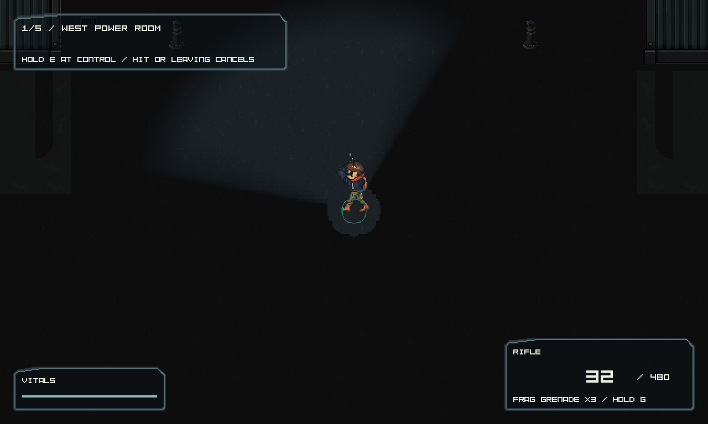
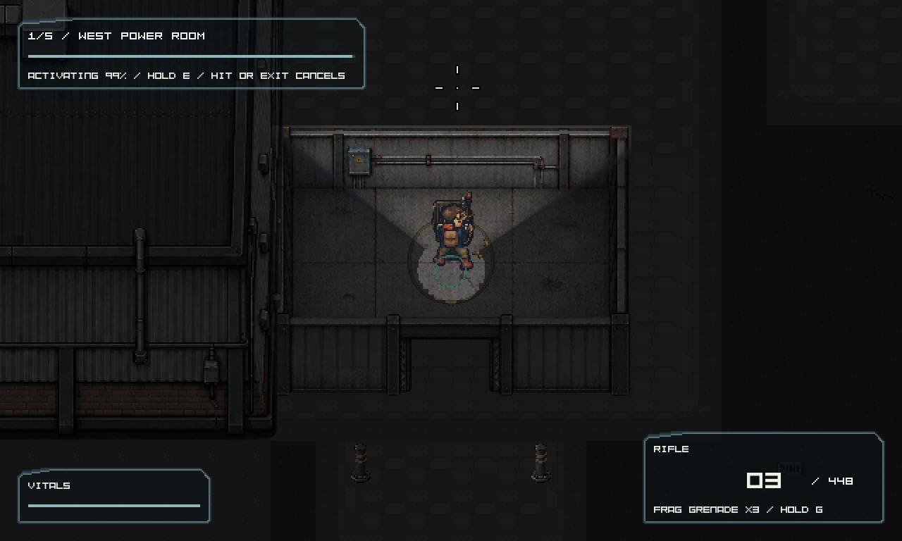
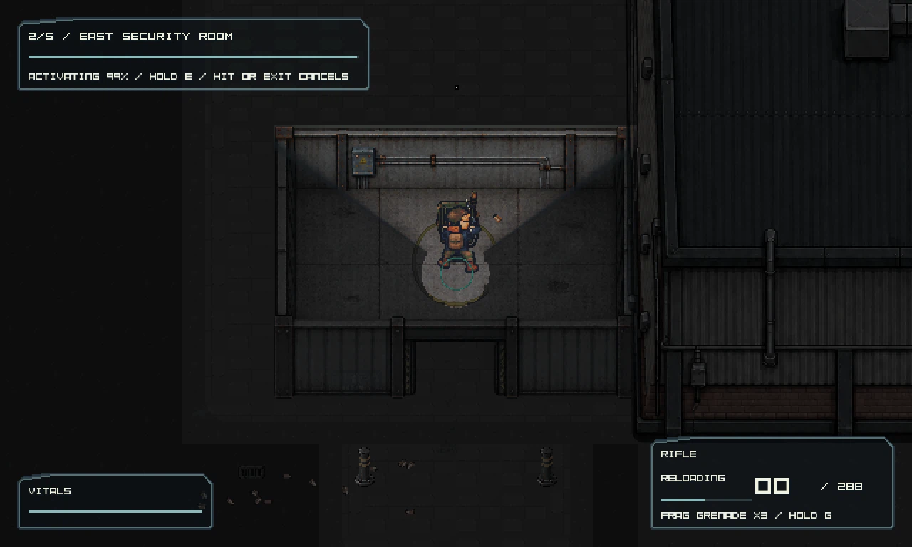
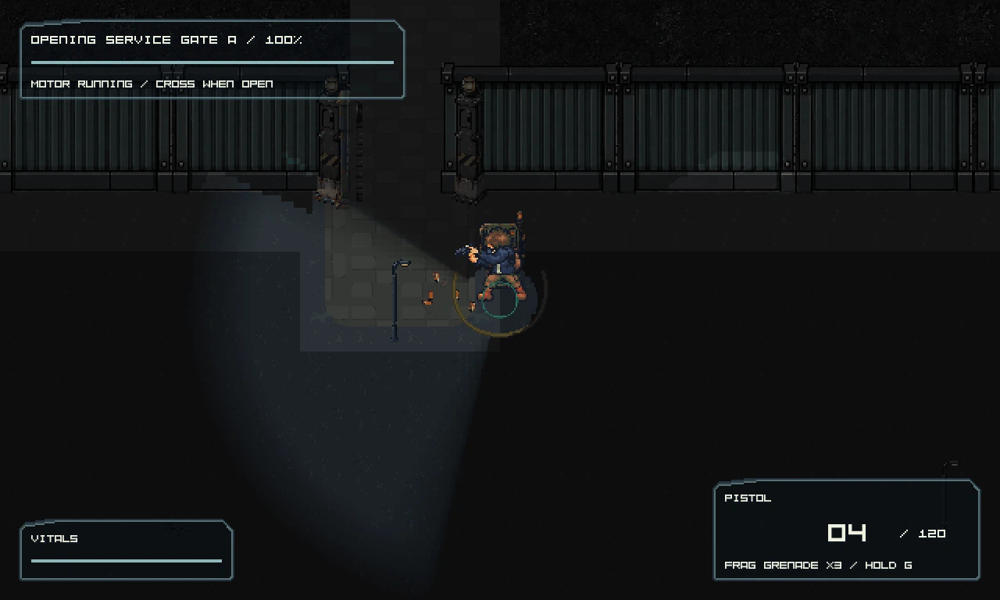
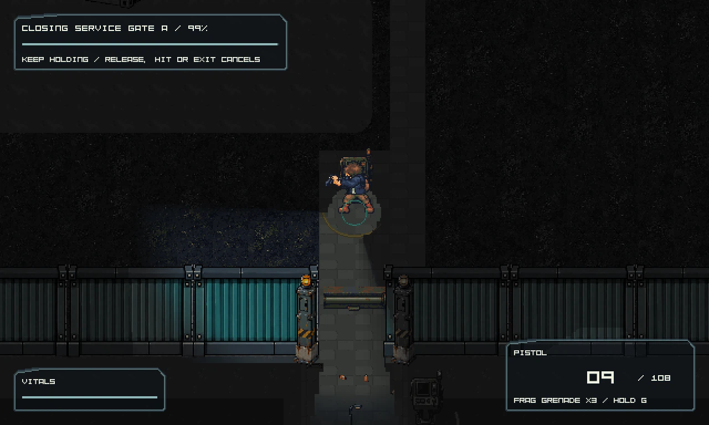
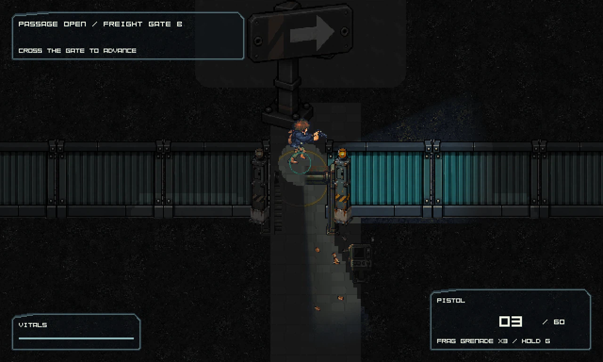

1. Arrive from the south
Spawn opens onto a framed yard with clear egress and two routes around the central cargo.

Native setup captureService Court · current Tiled composition
The current court frames the south arrival with two connected warehouse wings, a two-route cargo island, quiet asphalt and connected concrete aprons. Gate A leads onward through the same world toward Gate B and the coast.

Current after-render from the integrated map source. It is review evidence, not a claim of visual acceptance.
Spawn opens onto a framed yard with clear egress and two routes around the central cargo.

Native setup captureReach the west service room. The interruptible hold creates an audible cue and stronger pressure.

Power restoredHold beginsClear the local checkpoint threat and release the route; there is no global kill quota.

Security releasedCheckpoint beginsActivate the motor. Yard lights come on and a heavier wave arrives while the player can move and fight.

Gate passableMotor activatedPass through the opening and use the far-side control. The gate cannot close while the passage is occupied.

Gate closedGate crossedStay in the same world through the loading lanes and Gate B, then reach coastal extraction.

Coastal exit beginsGate B begins| Zone | Current source composition | Review question |
|---|---|---|
| Frontage | Two continuous warehouse bodies with independently sorted loading docks and attached west/east service rooms. | Do the masses connect visually while keeping the west/east destinations and north/south routes legible? |
| Cargo island | Containers at x=1360 and 1616, y=2504 and 2632; small crates form two rows at x=1136, 1168, 1200 and y=2568, 2600. | Are both bypasses broad and obvious? Do placed art and separate footprints agree? |
| Ground | Quiet asphalt GIDs 292-294; functional loading frontage, cargo, room and motor aprons; sparse drains. | Do materials clarify circulation without arbitrary striping or clutter? |
| Gate A | Motor apron, corrugated barrier and authored piers frame the 56 px crossing. Room signs and six bollards mark destinations and approaches. | Are the passage, motor, close control, barrier endpoints, and continuation toward Gate B apparent and clear? |
Current Tiled map sourceLevel art completion planRuntime sequence contract
Player guide and controlsFile check reportProject check reportDirect route smoke reportService route smoke reportDated concept reviewLaunch candidate
Executable SHA-256: 05D197E69F6F203AB949CBF9293E19941BC1FD3D7131374D43A96C30F3FA354A
Technical status: passed. Full-map artwork and human pacing remain under review.
Gate visibility and obstacle comparison
Smoke-event pictures may show the frame immediately before the logged transition. Use the settled gate probe above for post-close artwork; CSV logs prove route progression.
Read each report's status, revision and capture provenance before drawing conclusions. The packaged candidate records its executable and input hashes. Native event captures show the named runtime beats. Neither technical validation nor automated route completion establishes authored-art quality, human navigation, fairness or enjoyment.